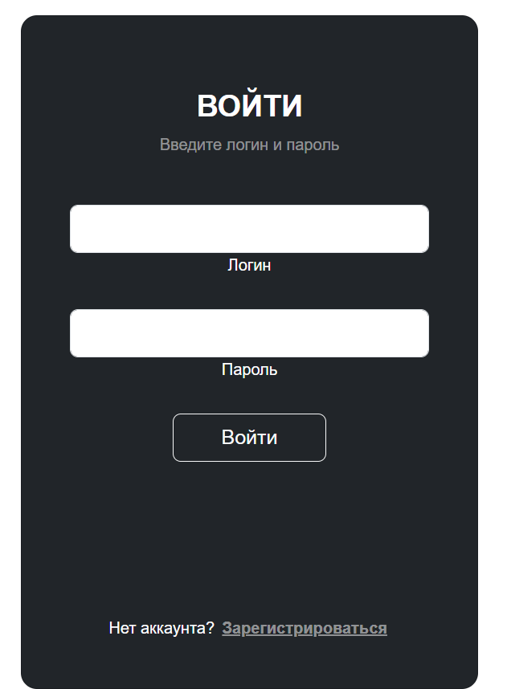
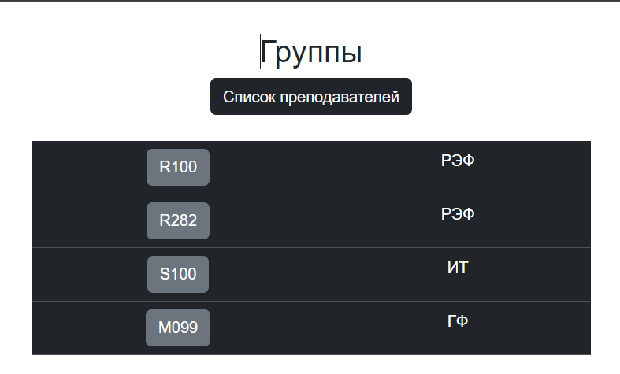

Лабораторная работа 4
Подготовка
Так как CORS был настроен в предыдущей практической, то можно приступить к созданию View для фронта на Vue. Есть сомнения по поводу решения с применением @csrf_exempt, так как этот декоратор позволяет полностью игнорировать csrf. Однако, в документации этот пример активно используется:
from rest_framework.authtoken.models import Token
from django.contrib.auth import authenticate
from django.views.decorators.csrf import csrf_exempt
import json
from rest_framework.decorators import api_view, renderer_classes
from rest_framework.renderers import JSONRenderer, TemplateHTMLRenderer
from django.contrib.auth.models import User
@csrf_exempt
@api_view(('POST',))
@renderer_classes((TemplateHTMLRenderer, JSONRenderer))
def sign_in_js(request):
request_json = json.loads(request.body)
print(request.body)
username = request_json['username']
password = request_json['password']
user = authenticate(username=username, password=password)
if user is not None:
login(request, user=user)
# token, created = Token.objects.get_or_create(user=user)
return Response(status=200)
else:
return Response(status=404)
@csrf_exempt
@api_view(('POST',))
@renderer_classes((TemplateHTMLRenderer, JSONRenderer))
def sign_up_js(request):
request_json = json.loads(request.body)
username = request_json['username']
password = request_json['password']
user = User.objects.create_user(username=username, password=password)
if user is not None:
return Response(status=200)
else:
return Response(status=404)
@csrf_exempt
def get_group_list(request):
groups = AcademicGroup.objects.all()
serializer = GroupSerializer(groups, many=True)
return JsonResponse(serializer.data, safe=False)
@csrf_exempt
def get_group_js(request, pk):
students = Student.objects.all().filter(group=pk)
serializer = StudentSerializer(students, many=True)
return JsonResponse(serializer.data, safe=False)
@csrf_exempt
def get_tutor_list(request):
tutors = Tutor.objects.all().filter()
serializer = TutorSerializer(tutors, many=True)
return JsonResponse(serializer.data, safe=False)
Этап Vue
Опишем основные пути проекта в index.js:
import Hello from "@/components/Hello.vue";
import Warriors from "@/views/Warriors.vue";
import Login from "@/components/Login.vue";
import Register from "@/components/Register.vue";
import GroupList from "@/components/GroupList.vue";
import Group from "@/components/Group.vue";
import TutorList from "@/components/TutorList.vue";
import {createRouter, createWebHistory} from "vue-router";
const routes = [ // массив с роутами
// отдельный роут:
{
path: '/hi', // конкретный url-адрес
component: Hello // Ссылка на компонент
},
{
path: '/warriors',
component: Warriors
},
{
path: '/login',
component: Login
},
{
path: '/register',
component: Register
},
{
path: '/group/',
component: GroupList
},
{
path: '/group/:groupid?',
component: Group
},
{
path: '/tutor/',
component: TutorList
}
]
const router = createRouter({
history: createWebHistory(), routes
})
export default router // экспортируем сконфигурированный роутер
Скрипт, используемый при регистрации:
<script>
import axios from 'axios';
export default {
data() {
return {
username: '',
password: ''
}
},
methods: {
signup() {
axios.post('http://127.0.0.1:8000/register_js/', {
username: this.username,
password: this.password
})
.then(response => {
console.log(response.data);
if(response.status==200){this.$router.push({ path: '/login'});}
});
},
gotoSignIn() {
this.$router.push({ path: '/login'});
}
}
}
</script>
Скрипты, используемые для получения списка групп и референса к списку преподавателей:
<script>
import axios from 'axios';
export default {
data() {
return {
items: []
};
},
created() {
axios.get('http://127.0.0.1:8000/group_js/')
.then(response => {
this.items = response.data;
})
.catch(error => {
console.error(error);
});
},
methods : {
showGroup(item) {
this.$router.push({ path: item});
},
gotoTutors() {
this.$router.push({ path: '/tutor/'});
}
}
}
</script>
Результаты
Чтобы сделать интерфейсы более красивыми были использованы готовые решения с bootstrap:  